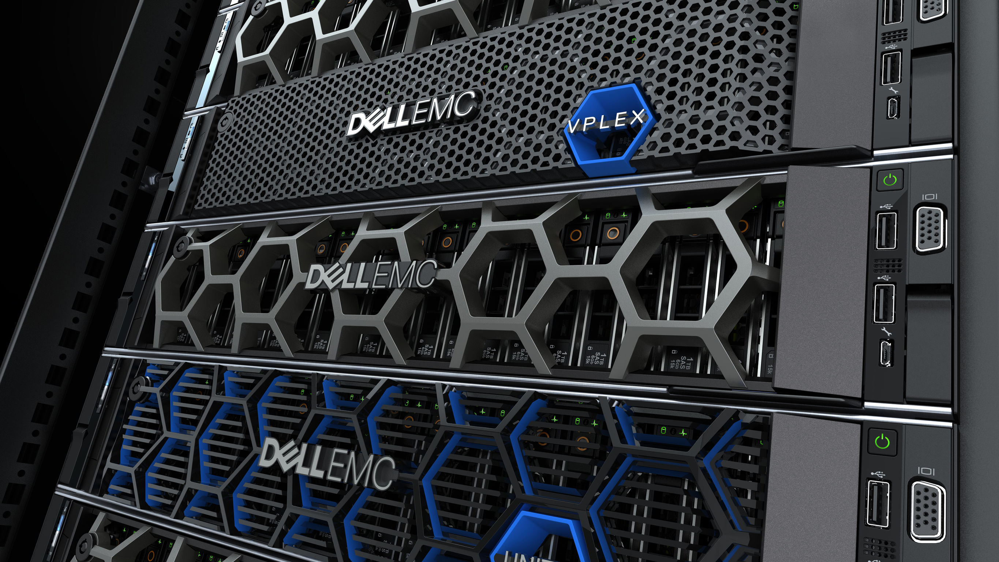
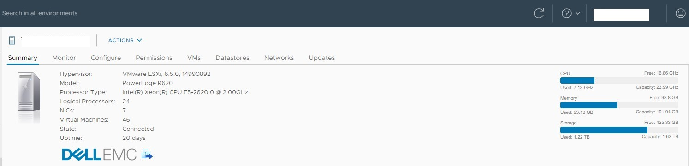

Dell 硬體規格介紹 Infrastructure Specification
Contents

這篇會簡單介紹公司大量使用到的 Dell EMC 伺服器硬體規格以及型號
從型號判斷 Dell EMC 伺服器 世代/產品類別/CPU slot 數/Intel or AMD CPU
How to identify which generation your Dell PowerEdge server belongs to
產品類別列表
比較常見的就是前兩個以粗體標示的 Rack Server 以及 Blade Server
延伸閱讀: 雲端建置-選擇機架式伺服器或是刀鋒伺服器
- R = 機架式伺服器 (Rack Server)
- M or MX = 模組化刀鋒伺服器 (Blade Server)
- C = 雲端模組 (Cloud-Modular)
- F = 機架式彈性混和雲 (Flexible - Hybrid rack-based sleds)
- T = 塔式伺服器 (Tower Servers)
三位數字
第 1 位: 1-3 代表 1 CPU； 4-7 代表 2 CPUs； 8 代表 2 or 4 CPUs； 9 代表 4 CPUs
第 2 位: 伺服器世代別。 0 代表 第十代； 1 代表 第十一代 …. 以此類推
第 3 位: CPU 廠家類別。 0 = Intel 1 = AMD
R330 就代表只有一個 CPU slot，屬於第十三代 Dell Server，CPU 使用 Intel
四位數字
第 1 位: iDRAC 等級。 1-5 Basic 等級； 6-9 Express 等級
第 2 位: 伺服器世代別。 0 代表 第十代； 1 代表 第十一代 …. 以此類推
第 3 位: CPU slot 數量。 1 代表一顆 ….. 以此類推
第 4 位: CPU 廠家類別。 0 = Intel 5 = AMD
R6415 就代表: iDRAC Express + 14 gen + 1 AMD CPU
vSphere Client 看到的資源數

從 Intel ARK Intel® Xeon® Processor E5-2620 可以看到 E5-2620 擁有 6 Cores 12 Threads 也就是六核心十二線程。
那麼 Dell R620 每台擁有 2 顆 E5-2620，總共 12 Cores 24 Threads
在 vSphere Clinet 顯示上 CPU 下方的 Capacity 計算方式就是 單核時脈 * core 數量，以這台 Dell R620 來說就是 2.0GHz * 12 cores = 24GHz
Author
LastMod 2022-09-13 (6933de7)